地政学
リマは太平洋岸でペルーの政治、金融、港湾、外交を集め、アンデスとアマゾンを海へつなぐ首都である。カヤオ港、空港、幹線道路が国内外の流れを受け、沿岸砂漠の都市が国家の入口になる。リマック川の谷も軸になる。

🇵🇪 ペルー / リマ県 / World City Atlas
太平洋に面した乾いた首都。海霧に包まれる断崖、植民地都市の中心部、カヤオ港、アンデスからの移住、丘陵の住宅地、セビーチェの食文化、金融とサービス、水不足の緊張が重なります。
都市の骨格
リマは、雨の少ない海岸砂漠に築かれたペルーの政治・経済中心である。旧市街、ミラフローレス、カヤオ、丘陵住宅、アンデスからの人の流れを重ねると、国全体の不均衡と創造力が見えてくる。
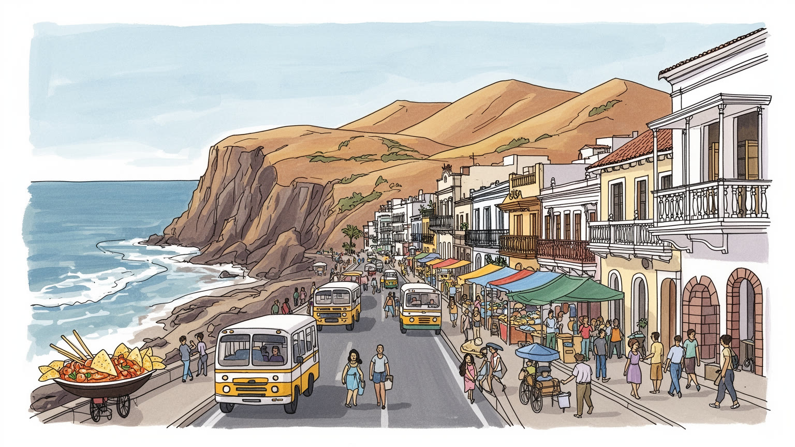
リマは太平洋岸でペルーの政治、金融、港湾、外交を集め、アンデスとアマゾンを海へつなぐ首都である。カヤオ港、空港、幹線道路が国内外の流れを受け、沿岸砂漠の都市が国家の入口になる。リマック川の谷も軸になる。
金融、行政、港湾、食品加工、小売、建設、観光、家事労働が都市を動かす。正規のオフィス職と露店、配達、工場、日雇いが近く、移住者の勤勉さと不安定な雇用が同じ経済を支えている。市場の朝も都市経済になる。
旧市街の教会、カトリックの行列、先住民の記憶、アフロペルー音楽、セビーチェと市場がリマの文化を厚くする。植民地の石造りと移住者の祭りが重なり、食卓と信仰が首都の日常を結ぶ。日々の祈りも味も路地に残る。
旅行者は旧市街、海岸の崖、博物館、レストラン、バランコを巡るが、住民は渋滞、水不足、治安、住宅費、通勤時間と向き合う。美しい太平洋の眺めの奥に、広い格差と強い生活力がある。海風の近くにも負担がある。
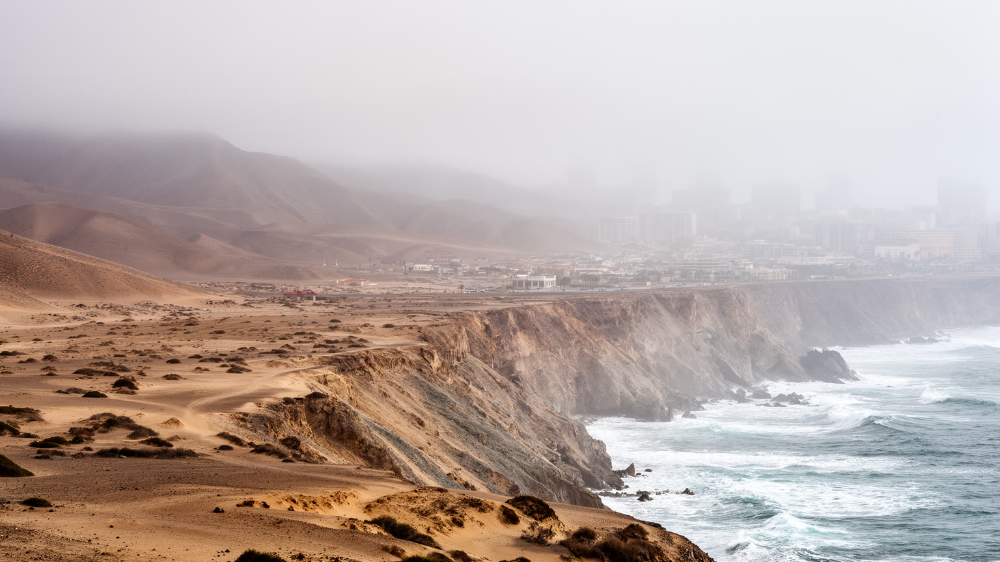
リマを理解する入口は、太平洋に面した砂漠の首都という矛盾した地理である。街はチジョン川、リマック川、ルリン川の扇状地を手がかりに広がったが、年間降雨は少なく、空はガルーアと呼ばれる低い海霧に覆われる日が多い。緑の都市というより、灰色の空、乾いた斜面、断崖、灌漑された公園が生活の背景になる。海岸の涼しい霧は暑さを和らげる一方、湿り気と日照不足をもたらし、住宅の劣化や気分にも影響する。都市が大きくなるほど、水源はアンデス側の降雪、貯水、河川管理に依存し、遠い山の気候変動が沿岸の蛇口へ届く。ミラフローレスの海辺を歩くと豊かな景観が見えるが、丘陵の周縁部では給水車や未整備の排水が日常に残る。リマの自然は、観光の青い海だけではない。乾いた地形の上に、人間が水を引き、道路を延ばし、住宅を積み上げてきた過程そのものが都市の姿である。砂漠に首都を維持するという条件を知ると、リマの交通、格差、緑地、水道、住宅政策が一つの問題として見えてくる。海霧は柔らかく街を包むが、その下の都市は水をめぐる緊張の上に立っている。だから海岸の涼しさを快適さだけで読むと誤る。霧、砂、河川、断崖、貯水池をつないで見た時、リマの豊かさと脆さが同じ地図に現れる。公園の緑がより貴重に見えるのも、この乾きが日常を支配するためである。
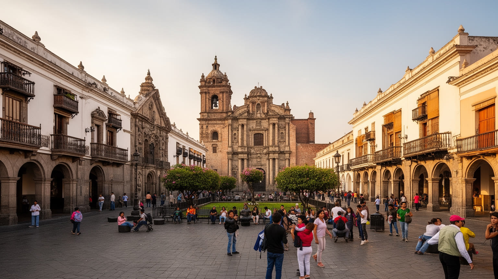
リマの歴史地区は、スペイン植民地期に南米太平洋側の政治と宗教を統治した都市の中心である。マヨール広場、大聖堂、政府宮殿、修道院、木製バルコニーを持つ邸宅は、征服と布教、行政、商業が一体だった時代の権力を示す。美しい建築を眺めるだけなら短い観光で済むが、旧市街の意味はもっと重い。先住民社会の上に置かれた都市計画、植民地の人種秩序、奴隷制、独立運動、共和国の中央集権、民衆のデモが同じ広場と通りに積み重なっているからである。歴史地区は世界遺産として保存される一方、老朽住宅、商店、露店、交通、治安、行政施設が混ざる現役の中心でもある。修復されたファサードの奥に、低所得世帯の住まいが残ることもある。保存は単に過去を美しく飾る仕事ではなく、誰が中心部に住み続けられるか、観光の利益がどこへ届くかを問う作業である。リマの旧市街を歩くと、植民地の壮麗さと社会の不平等が切り離せないことが分かる。鐘の音、行列、警備、通勤者、土産物の店が重なり、首都の歴史は展示物ではなく、今も政治と生活を動かす空間として続いている。広場で起きる抗議や式典は、過去の権力空間が現在も国民の交渉の場であることを示す。古い石畳は、観光の舞台である前に、共和国の不満と期待が何度も通った道である。そのため保存は、生活の権利と切り離せない。
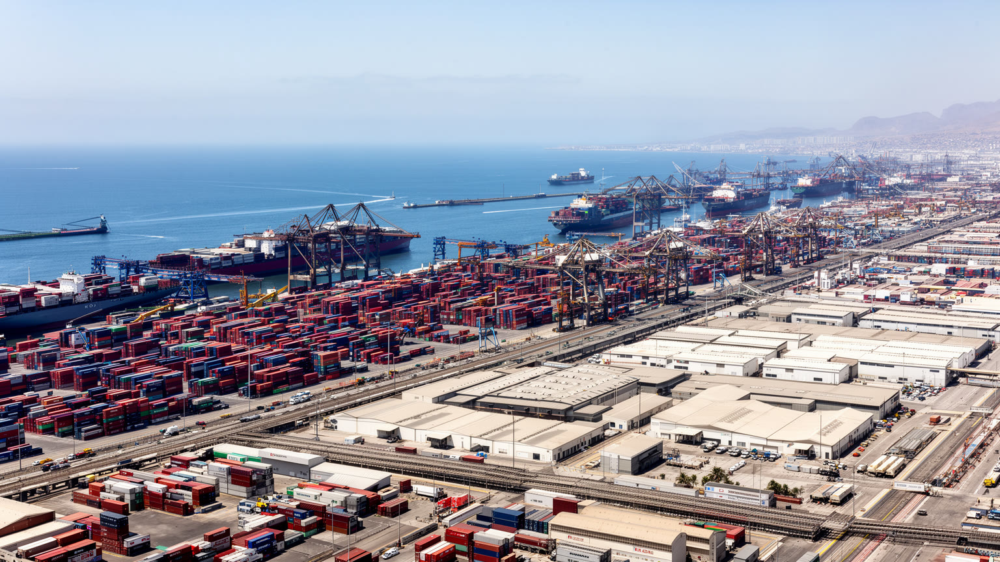
リマ都市圏の海側で、カヤオは港と空港を抱える実務の玄関である。ペルーの輸出入は鉱産物、食品、工業製品、消費財、燃料、機械を太平洋へ出し入れし、コンテナヤード、倉庫、通関、トラック、鉄道、冷蔵物流、港湾労働がその流れを支える。観光客がミラフローレスの崖や旧市街を見る間にも、港では船の到着時刻、税関手続き、倉庫の空き、道路混雑が都市経済を左右している。カヤオは歴史的な港町であり、要塞や漁港の記憶も持つが、治安、貧困、麻薬取引、港湾周辺の大気汚染といった重い課題も抱える。リマの豊かな消費は、港を通る輸入品に支えられ、アンデスや沿岸で生産された資源はここから世界へ向かう。つまりカヤオは、首都圏の周辺ではなく、国家経済が外部と接触する場所である。港湾の近代化は効率を上げる一方、周辺住民に騒音、交通、安全の負担を残す。海に開く都市を読むには、夕日の美しい遊歩道だけでなく、コンテナの列、夜のトラック、港湾労働者の交代時間を見なければならない。カヤオを通じて、リマはアンデスの内陸性と太平洋の国際性を結びつけている。港の混雑や治安対策は、遠い国際貿易の話ではなく、倉庫で働く人の賃金、魚市場の価格、都心の店に並ぶ商品の安定にも響く。岸壁は都市の暮らしに直結している。港を知ることは、首都の見えない労働を知ることでもある。
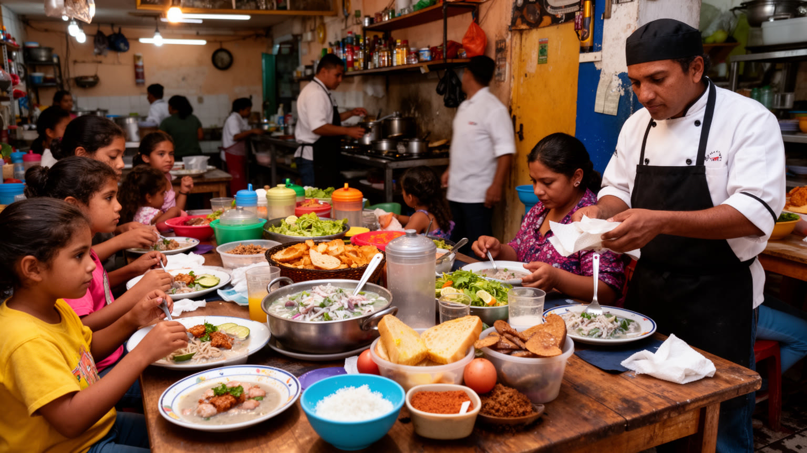
リマの食文化は、海岸の魚介、アンデスの作物、アマゾンの香り、スペイン、中国、日本、アフリカ系の移民が重なって生まれた都市の言語である。セビーチェはその象徴で、白身魚、ライム、唐辛子、玉ねぎ、トウモロコシ、サツマイモが、太平洋の冷たい海流と市場の鮮度を食卓へ運ぶ。だがリマの味は高級レストランだけで完成しない。市場の食堂、屋台、家庭のスープ、チファの中華ペルー料理、ニッケイ料理、鶏料理、甘い菓子、通勤途中の軽食が、首都の階層と移住の歴史を映す。料理の国際的な評価は観光を呼び、シェフや農家、漁師に注目を集める一方、食材価格、漁業資源、厨房の低賃金、 informal な販売の規制も問題になる。セビーチェの明るい酸味の背後には、早朝の魚市場、氷、配送、調理人の技術、家族の昼食時間がある。リマで食べることは、国土の多様性を一皿に集める行為であり、同時に誰がその価値を得るのかを問う行為でもある。市場を歩けば、アンデスから届いたジャガイモやトウモロコシ、海から届いた魚、移民が持ち込んだ調理法が同じ都市で出会う。味は観光資源である前に、移動してきた人びとが首都で居場所を作る方法である。昼食の時間に家族や同僚が同じ皿を囲む光景は、格差の大きい都市で共有できる数少ない喜びでもある。食はリマの誇りであり、働く人の生活を映す鏡でもある。
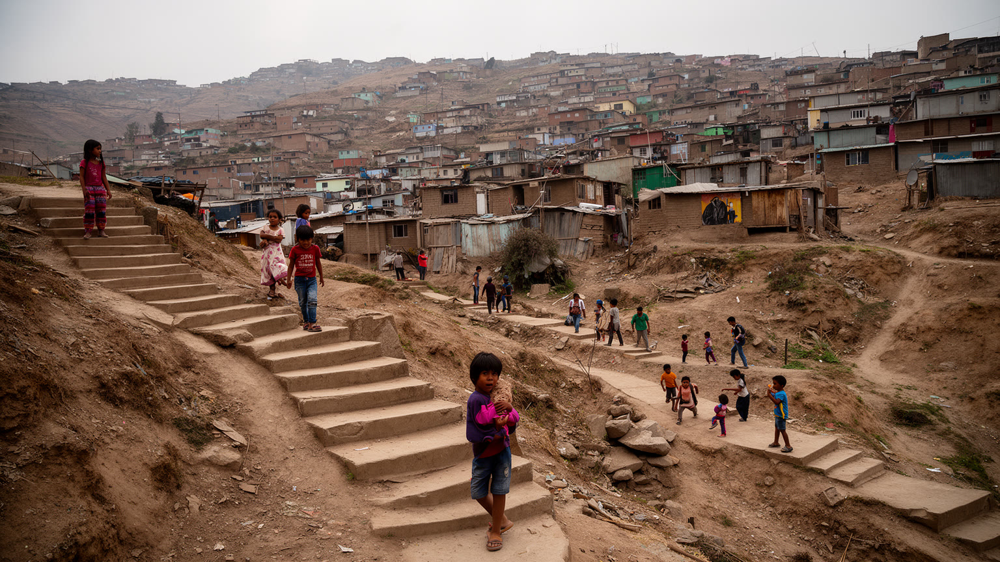
リマの人口拡大は、アンデスや地方都市からの移住なしには説明できない。二十世紀後半、仕事、教育、安全、医療を求めて多くの人が首都へ向かい、砂漠の斜面や周縁部に自力で住宅地を作った。最初は水道、電気、舗装、学校、医療が乏しくても、住民は共同で土地を整え、バス路線を求め、行政へインフラを要求し、少しずつ家を増築してきた。丘陵の住宅は貧困の象徴として見られがちだが、そこには都市を自分たちで建てる強い実践もある。とはいえ、不安定な土地権利、斜面崩壊、火災、水不足、長い通勤、治安、若者の機会不足は今も重い。中心部や海岸地区の豊かさと、周辺の未整備な生活環境の差は、リマの社会的な地図をはっきり分ける。家族は地方の親族とのつながりを保ち、祭り、言葉、料理、音楽を首都へ持ち込む。リマの文化が多様で活気を持つのは、この移住の積み重ねによる。一方で、首都が国の仕事と教育を過度に吸い寄せることは、地方との格差を広げる。丘の上から市街地を見下ろすと、リマが計画された都市であるだけでなく、人びとの必要と努力によって押し広げられてきた都市であることが分かる。住宅の壁一枚一枚が、移動した家族の時間を記録している。子どもが学校へ通い、親が市場や建設現場へ向かい、週末に家を塗り足す生活は、都市化を統計ではなく家庭の手仕事として見せる。丘陵住宅はリマの周縁ではなく、首都の成長そのものだ。
リマはペルー経済の中心として、金融、行政、企業本社、商業、教育、医療、港湾物流、食品加工、繊維、建設、観光を集める。サン・イシドロやミラフローレスのオフィス街では銀行、保険、法律、通信、鉱業関連サービスが働き、周辺の工場地帯や倉庫では食品、飲料、衣料、印刷、流通の現場が動く。都市の雇用は大企業だけでなく、露店、家族経営の店、タクシー、配達、清掃、警備、家事労働、修理業に支えられている。正規雇用とインフォーマルな仕事の差は、収入、社会保険、労働時間、退職後の安心に直結する。首都に仕事が集中するほど、地方から若者が集まり、教育や人脈を得る機会も増えるが、住宅費と通勤時間は重くなる。鉱業国ペルーの収益はリマの金融や行政を通じて動く一方、鉱山地域の環境や先住民コミュニティとの緊張も首都の政治へ戻ってくる。リマの産業を読むには、海辺の豊かな地区と、工場、倉庫、市場、バス車庫を同じ経済として見る必要がある。都市は国の富を集める場所であると同時に、その配分をめぐる不満が集まる場所でもある。昼のオフィス、夜の配送、早朝の市場がつながることで、リマの大きなサービス経済は動き続けている。そこでは英語を使う専門職と、保険のない日雇い労働者が同じ都市の景気に左右される。首都の成長を評価するには、雇用の数だけでなく、働く人が安定して暮らせる条件を見なければならない。
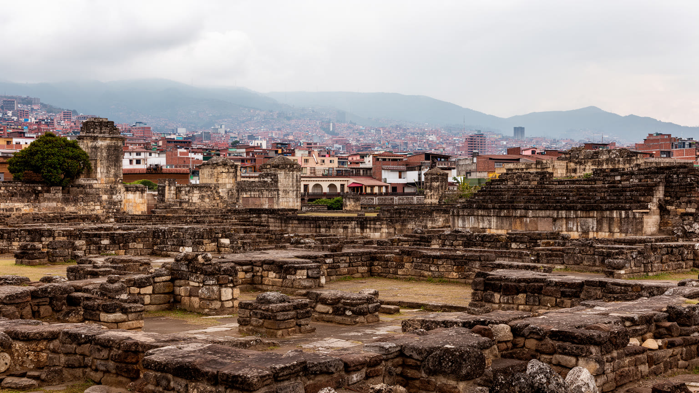
リマはスペイン植民地都市として知られるが、その下には征服以前の長い歴史がある。市内と周辺にはワカと呼ばれる先住民の祭祀・行政遺跡が残り、ピラミッド状の土の構造物が高層住宅や道路のすぐ近くに現れる。これらは観光の小さな名所であるだけでなく、現在の首都が先住民の土地と記憶の上に築かれたことを示す。植民地期には教会、広場、官庁が都市の中心を作り、先住民、アフリカ系、混血、ヨーロッパ系の人びとが不平等な秩序の中で暮らした。共和国になっても、リマは白人・メスティーソの中央権力として地方や先住民社会を見下ろす視線を持ち続けた。地方から移住したケチュア語話者やアイマラ系の家族は、差別を受けながらも祭り、音楽、織物、食を首都の日常へ持ち込んだ。博物館に展示された土器や織物は過去の遺物に見えるが、先住民性は現在の通勤者、学生、市場の売り手、家庭の言葉の中にもある。リマを読むには、旧市街の植民地美だけでなく、ワカ、移住者の祭礼、政治デモ、差別への抵抗を一緒に見る必要がある。記憶は石の建物だけに宿らない。砂の遺跡と現代の住宅街が隣り合う風景は、首都が複数の時間を同時に生きていることを教える。近代的な道路が遺跡の横を走る時、都市は過去を消して進むのではなく、過去を囲い込みながら生活を続けている。誰の歴史を中心に置くかは、今のリマの政治でもある。
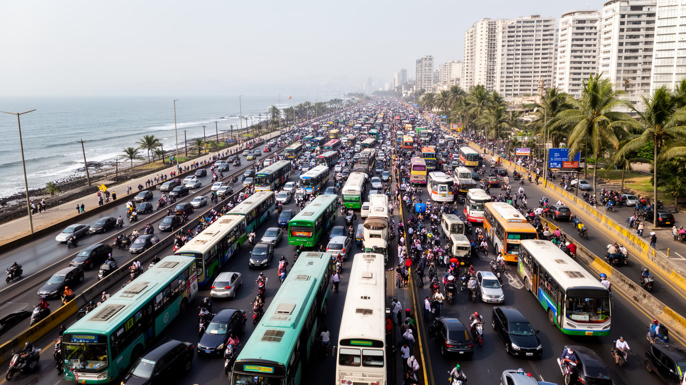
リマの日常を最も強く縛るものの一つが交通である。都市圏は海岸沿いの豊かな地区、旧市街、カヤオ、北部や東部の周縁住宅地へ大きく広がり、仕事や学校までの距離が長い。多くの住民はバス、ミニバス、メトロポリターノ、タクシー、配車アプリ、徒歩を組み合わせて移動するが、渋滞、乗り換え、運賃、治安、排気ガスが毎日の負担になる。バス専用道や都市鉄道の整備は前進だが、需要に対して路線網はまだ十分ではなく、周辺部では駅や停留所までのアクセスが弱い。交通の悪さは単なる不便ではない。通勤時間が長ければ、家族と過ごす時間、学習、休息、女性のケア労働、低所得者の仕事選びが制約される。車を持つ中間層は渋滞に苦しみ、車を持たない人は混雑した公共交通と歩道の弱さに苦しむ。道路拡幅だけでは解決しにくく、歩行者、自転車、バス、鉄道、郊外住宅政策を同時に考える必要がある。リマの交通を観察すると、首都の格差が時間の格差として現れることが分かる。海岸のレストランへ短時間で行ける人と、夜明け前に丘陵地を出る人が同じ都市で暮らしている。都市の公平さは、目的地へ誰がどれだけの時間と危険を払ってたどり着くかに表れる。停留所の照明、歩道の段差、バスの運転の荒さ、乗客の密度は小さな問題に見えて、毎日の疲労を左右する。移動を整えることは、生活の尊厳を整えることでもある。
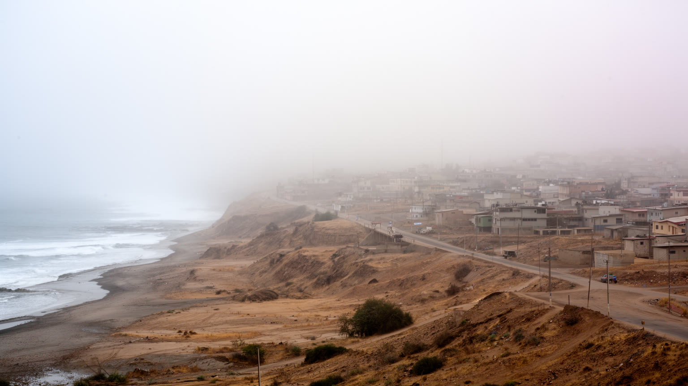
リマの気候問題は、暑さだけではなく水の不安として現れる。街そのものは海岸砂漠にあり、雨がほとんど降らないため、飲料水や生活用水はアンデスから下る河川、貯水池、地下水、遠隔地の水管理に頼る。人口が増え、住宅地が周縁へ広がるほど、給水管、下水、浄水、漏水対策への負担は大きくなる。正規の住宅地では蛇口から水が出ても、丘陵部や informal な地区では給水車に頼る家庭があり、水の単価がむしろ高くなることがある。気候変動で氷河や降雪、雨季のパターンが変われば、首都の水安全保障はさらに不安定になる。エルニーニョ現象の強い年には豪雨、洪水、土砂災害が起き、普段は乾いた河川や斜面が突然危険になる。つまりリマは、乾燥と水害の両方に備えなければならない都市である。公園の緑、ゴルフ場、高級住宅の庭、工場、飲食店、家庭の水使用は、見えにくい形で同じ資源を取り合う。水を節約する技術だけでなく、誰に先に水が届き、誰が高い費用を払うのかという配分の問題が重要になる。海霧に包まれた穏やかな朝でも、都市の裏側では水源、管路、浄水場、給水車が絶えず働いている。砂漠の首都にとって、水は自然資源である前に、社会の信頼を測る基盤である。水道料金、漏水、河川汚染、災害時の備蓄は、家庭の問題であり行政の問題でもある。透明な水が安定して届くかどうかが、リマの将来への信頼を左右する。
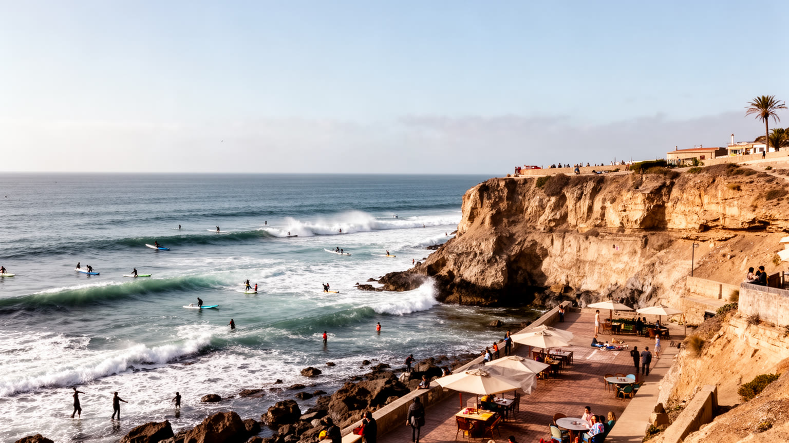
リマ観光の印象は、旧市街の広場と海岸地区の眺めの間で大きく変わる。ミラフローレスの断崖から太平洋を見下ろす公園、サーフィンの海、海沿いの遊歩道、バランコの芸術的な街路、レストランやバーは、乾いた首都に開放感を与える。旅行者にとってリマは、クスコやマチュピチュへ向かう前後の通過点ではなく、食、博物館、海岸散歩、夜の文化を楽しむ滞在都市になっている。しかし観光の明るい地区は、都市全体の現実を代表しない。海岸近くの安全で高価な地区と、周縁部の長い通勤や水不足は、同じ首都の中で大きく隔たる。観光地の成功は雇用を生むが、家賃上昇、交通混雑、警備の強化、短期滞在者向けの店の増加が住民の暮らしを変えることもある。バランコの壁画や古い家並みは魅力的だが、文化の価値が不動産価値へ変わる時、誰が残れるかが問題になる。リマを旅するなら、海岸の洗練と旧市街の歴史、市場の食、博物館の記憶、周縁住宅の存在を一つの都市として結びたい。太平洋の夕景は美しいが、その眺めは砂漠都市の水、移住、格差と切り離せない。観光の楽しさを深めるのは、明るい場所だけでなく、そこへ至る道のりを読む視線である。海沿いの遊歩道で感じる余裕と、帰宅ラッシュのバス停で感じる疲労は、同じリマの時間である。旅の視線がその差を忘れない時、都市の魅力はより深くなる。
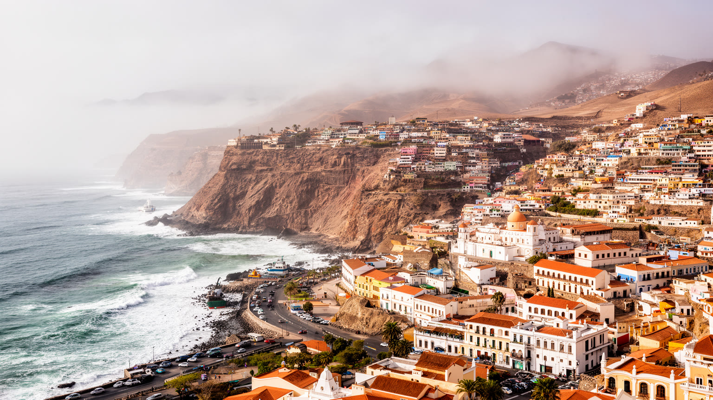
リマを一つの言葉で言えば、砂漠と太平洋の首都である。雨の少ない沿岸に、植民地以来の政治中心、カヤオ港、金融とサービス、旧市街の教会、海岸の富裕地区、丘陵の移住住宅、セビーチェの食文化、先住民と植民地の記憶が重なっている。首都はペルーの機会を集める場所であり、同時に地方との格差を見せる場所でもある。ミラフローレスの崖から見る海、旧市街の広場、カヤオのコンテナ、周縁部の給水車、市場の食卓を別々に見ると、リマは断片的にしか分からない。これらをつなげると、国土の多様性と不均衡が一つの都市に集まる構造が見えてくる。リマの強さは、移住者が作る商い、食文化の創造力、港と空港の接続、政治と金融の集中にある。一方で、渋滞、水不足、治安、住宅格差、公共空間の偏りは日常の重い課題である。海霧は都市を柔らかく見せるが、その下には厳しい資源条件と社会の緊張がある。リマを読むには、太平洋へ開く国際性と、アンデスから流れ込む人と水を同時に見る必要がある。砂漠の上に築かれたこの首都は、ペルーがどのように過去を背負い、地方を吸い寄せ、世界へ接続しているのかを最も濃く示している。美しい断崖、混雑した道路、古い教会、丘の住宅、港のクレーンを一続きに眺めると、リマは矛盾を隠さず抱える都市として立ち上がる。その矛盾こそが、首都の重さと面白さである。